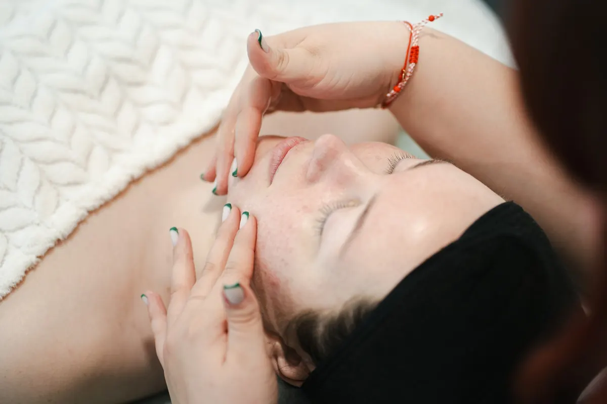
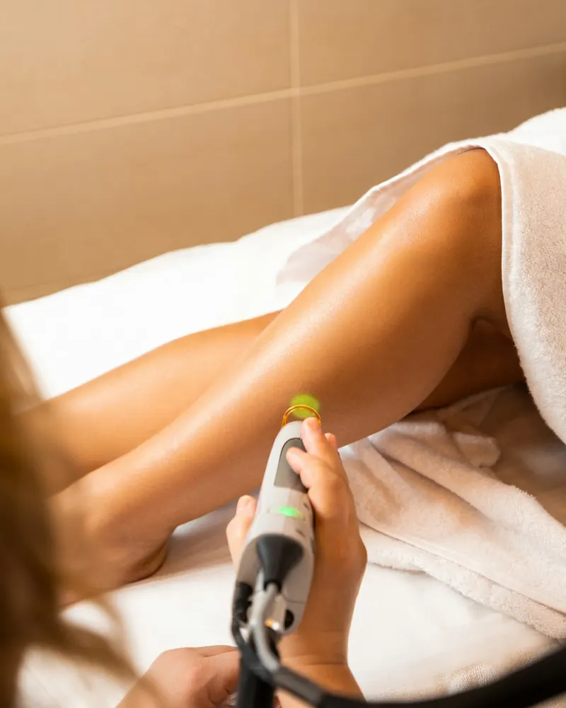
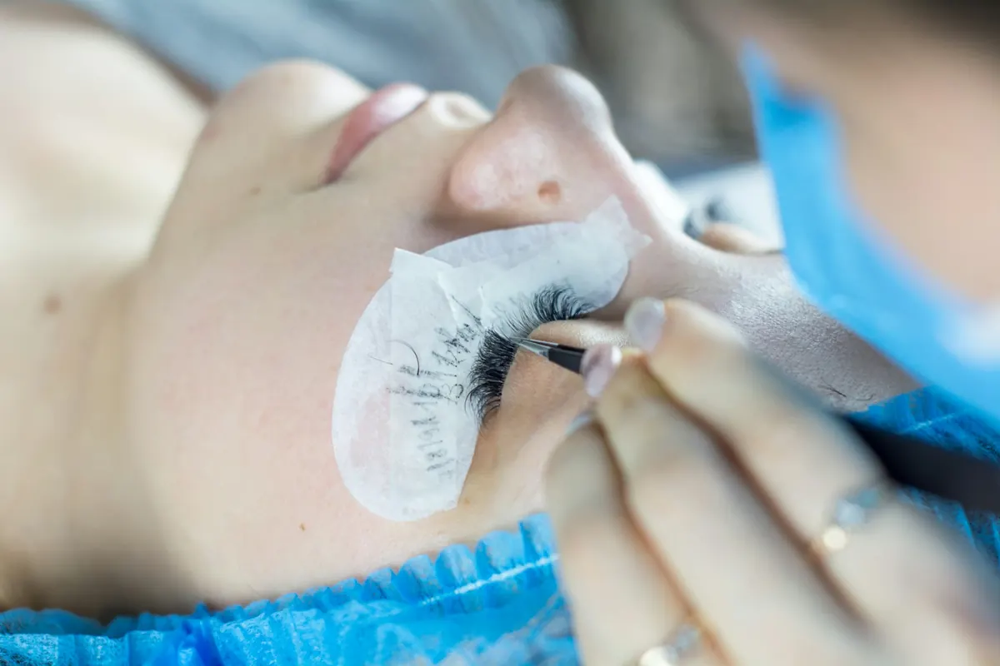
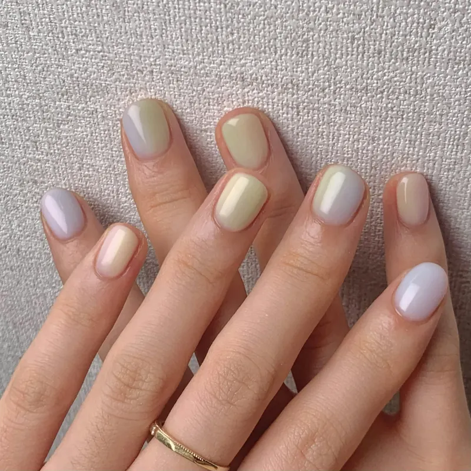
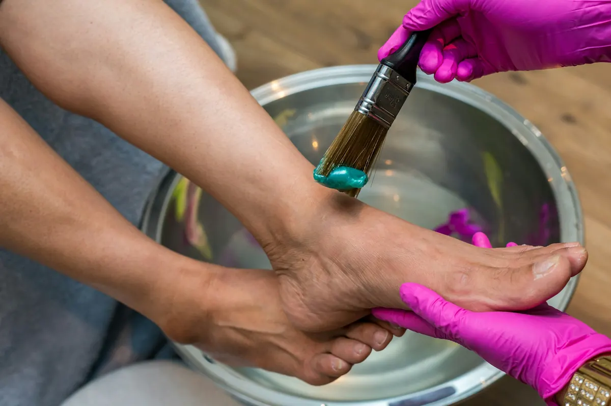

Zabiegi
Ponad 30 zabiegów w pięciu strefach. Rozwiń zabieg, żeby zobaczyć wskazania, przeciwwskazania i zalecenia. O ceny i wolne terminy zapytaj telefonicznie.

Twarz
Oczyszczanie, nawilżanie, odmładzanie i terapie skóry problematycznej.
Zabiegi Clarena
Profesjonalne zabiegi pielęgnacyjne na twarz, szyję i dekolt, dobierane do rodzaju skóry.
Do wyboru
- oczyszczający: skóra tłusta, mieszana i trądzikowa (drzewo herbaciane, cytryna, mięta)
- odczulająco-wyciszający: skóra wrażliwa, naczynkowa, przesuszona
- silnie nawilżający i dotleniający z maską algową: skóra zmęczona, szara, sucha
- wygładzający z kolagenem: idealny po lecie, poprawia owal twarzy
- diamentowy lift: zabieg „bankietowy” dla cery dojrzałej
- ze złotem i witaminą C: skóra szara, słabo odżywiona
- przeciwzmarszczkowy z kawiorem i perłą: regeneracja i rozświetlenie
Mezoterapia igłowa twarzy
Kwas hialuronowy, witaminy, aminokwasy i peptydy podane cienką igłą prosto do skóry właściwej. Głębokie nawilżenie, większa gęstość i napięcie skóry, spłycenie zmarszczek.
Wskazania
- skóra zmęczona, wiotka, bez napięcia
- uszkodzenia posłoneczne i przebarwienia
- blizny potrądzikowe i pourazowe
Przeciwwskazania
- ciąża i karmienie piersią
- alergia na składniki preparatu
- choroby skóry: wirusowe, bakteryjne, grzybicze
- choroby nowotworowe i autoimmunologiczne
Warto wiedzieć
Drobne grudki po ukłuciach znikają w ciągu około 2 dni i nie wymagają zostania w domu. Zabieg można wykonywać przez cały rok.
Dermapen
Automatyczna mikroigła wprowadza substancje aktywne w głąb skóry i pobudza produkcję kolagenu i elastyny. Stosujemy koncentraty Meso Med Program z komórkami macierzystymi lub kwasem hialuronowym.
Wskazania
- cienka skóra wokół oczu i ust
- drobne zmarszczki, poszerzone pory
- wiotka skóra twarzy, szyi i dekoltu
- blizny i rozstępy, nierówna powierzchnia skóry
Mesoboost Therapy
Podwójne nawilżenie potrójnym kwasem hialuronowym z witaminą C. Wykonujemy w wersji bezigłowej lub mikroigłowej (roller), z serum dobranym do skóry: Capillary dla naczynkowej, haC przeciwstarzeniowe, Collagen & Elastin dla dojrzałej.
Efekt
- intensywne nawilżenie i rozjaśnienie
- lepsza elastyczność i napięcie
- spłycone zmarszczki, zwężone pory
Przeciwwskazania
- ciąża, karmienie piersią
- aktywna opryszczka, ostre infekcje
- skóra podrażniona lub uszkodzona
- kuracja retinoidami doustnymi w ciągu ostatnich 6 miesięcy
Warto wiedzieć
Roller do wersji mikroigłowej jest dodatkowo płatny (wg obecnej strony: 60 zł) i wystarcza na 8 zabiegów. Między wizytami: kuracja domowa mesoboost haC Home Edition.
Retix.C
Kuracja anti-aging twarzy, szyi i dekoltu: czysty retinol, witamina C i antyoksydanty. Wygładza, rozjaśnia przebarwienia, zagęszcza skórę. Efekt widać po pierwszym zabiegu.
Przebieg
W gabinecie serum i maska z retinolem, którą zmywasz w domu po 6-8 godzinach. Złuszczanie zaczyna się po 2-3 dniach; jeśli chcesz, by wypadło w weekend, umów się na środę lub czwartek.
Przeciwwskazania
- ciąża i karmienie piersią
- opryszczka, uszkodzony naskórek
- trądzik w fazie aktywnej, skóra naczynkowa
- łuszczyca, AZS
- silne słońce (pełnia lata)
Po zabiegu
- nie opalać się przez 4 tygodnie
- nie zdrapywać złuszczającego się naskórka
- krem SPF 50+ w trakcie kuracji i miesiąc po
Mikrodermabrazja diamentowa
Mechaniczne złuszczanie naskórka głowicą z naturalnym diamentem, warstwa po warstwie. Bezbolesne, bez ryzyka uczuleń, dobre także dla osób, które nie tolerują peelingów chemicznych.
Wskazania
- trądzik, zaskórniki, łojotok, rozszerzone pory
- blizny i przebarwienia
- szorstki, zrogowaciały naskórek
- rozstępy, wiotkość skóry
Po zabiegu
- dzień bez makijażu
- 48 godzin bez basenu
- 2 tygodnie ochrony przed UV
Peeling kwasem migdałowym
Łagodny kwas AHA z gorzkich migdałów: wyrównuje koloryt, zwęża pory, działa przeciwbakteryjnie. Nie uwrażliwia na słońce, więc można go robić także latem, również przy skórze wrażliwej i naczynkowej.
Przeciwwskazania
- infekcje skóry, skaleczenia, oparzenia
- terapia retinoidami
- skłonność do bliznowców
- ciąża i karmienie piersią
Eksfoliacja kwasami Natinuel
Peeling złożony z kwasów AHA, BHA i AKA. Działa zarówno leczniczo (trądzik, skóra tłusta), jak i odmładzająco (zmarszczki, utrata jędrności).
Wskazania
- zmarszczki, fotostarzenie
- trądzik, łojotok, rozszerzone pory
- przebarwienia, blizny potrądzikowe
Warto wiedzieć
Kwasy uwrażliwiają na słońce, dlatego zabiegu nie wykonujemy latem. Cykl można powtarzać 2-3 razy w roku.
Elektrokoagulacja
Usuwanie drobnych zmian skórnych prądem wysokiej częstotliwości: zmiana jest ścinana od razu, a drobne strupki goją się w kilka dni.
Wskazania
- rozszerzone naczynka, naczyniaki gwiaździste
- brodawki, włókniaki, kępki żółte
- prosaki, kaszaki
- pojedyncze zbędne włosy
Przeciwwskazania
- rozrusznik serca
- cukrzyca
- ciąża i karmienie piersią
- świeża opalenizna, skłonność do przebarwień
- zaburzenia krzepnięcia, infekcje

Ciało i depilacja
Laser diodowy, depilacja światłem, modelowanie sylwetki.
Laser diodowy LightSheer
Laser diodowy amerykańskiej firmy Lumenis z certyfikatem FDA: szybkie, skuteczne i trwałe usuwanie owłosienia. Wiązka działa tylko do 2 mm w głąb skóry i niszczy cebulki włosów w fazie wzrostu.
Ile zabiegów
Jeden zabieg usuwa do 30% widocznych, ciemnych włosów, dlatego potrzeba co najmniej 3 zabiegów co 6-8 tygodni. Pierwszy poprzedzamy konsultacją i próbą laserową.
Przed zabiegiem
- skóra ogolona, umyta, bez kosmetyków
- bez opalania i samoopalaczy (min. 4 tygodnie)
- bez wyrywania włosów, wosku i pęsety (4 tygodnie)
- bez retinolu, kwasów i peelingów; dziurawiec i nagietek odstawić
Przeciwwskazania
- ciąża, karmienie piersią
- opalenizna, leki i zioła światłouczulające
- bielactwo, łuszczyca, opryszczka
- choroby nowotworowe, zaburzenia krzepnięcia
Po zabiegu
- 2 tygodnie ochrony przed słońcem (SPF 50)
- kilka dni bez alkoholu, mydła i dezodorantu na skórze
- krem łagodzący typu Alantan lub Bepanthen
Depilacja światłem IPL
Pulsacyjne światło działa na melaninę we włosie i niszczy mieszek. Skuteczna przy włosach ciemnych i jaśniejszych, możliwa także przy śniadej karnacji.
Ile zabiegów
Pierwszy zabieg usuwa około 20-50% włosów, do gładkiej skóry potrzeba zwykle 4-8 zabiegów co 4-9 tygodni. Efekt utrzymuje się nawet kilka lat.
Endermologia LPG
Mechaniczny masaż specjalną głowicą: cellulit, rozstępy, modelowanie sylwetki i ujędrnienie skóry. Wykonywany w specjalnym stroju.
Wskazania
- cellulit, wiotka skóra
- obrzęki, zaburzenia krążenia krwi i limfy
- napięcie mięśni
Przeciwwskazania
- ciąża i karmienie piersią
- aktywne nowotwory, zapalenie żył
- leki przeciwzakrzepowe, choroby krwi
- infekcje skóry
Kriolipoliza LipoCryo
Bezinwazyjne zamrażanie komórek tłuszczowych. Rozpadające się komórki organizm usuwa naturalnie; zabieg zmniejsza grubość warstwy tłuszczu nawet o połowę.
Zalety
- bezpieczny: podwójna kontrola temperatury
- bezbolesny, bez rekonwalescencji
- efekt widoczny już po pierwszym zabiegu

Oczy i brwi
Makijaż permanentny, lifting i laminacja rzęs, henna, makijaż.
Makijaż permanentny
Brwi, kreska, usta. Delikatna pigmentacja, która podkreśla naturalną urodę. Korekta po 6 tygodniach jest wliczona w cenę.
Lifting i laminacja rzęs Elleebana
Podkręcone, lśniące i optycznie dłuższe własne rzęsy, bez doczepiania. Zabieg w 4 krokach: lifting, farbowanie, botox (keratyna, kwas hialuronowy, pantenol) i laminacja. Rzęsy mogą zyskać do 30% długości i grubości.
Przeciwwskazania
- jęczmień, zapalenie spojówek lub rogówki
- świeże operacje w okolicy oczu
- chemioterapia
- soczewki kontaktowe trzeba zdjąć przed zabiegiem
Po zabiegu
- 24 godziny bez moczenia i malowania rzęs
- bez sauny i pary
- 48 godzin bez mocnych płynów do demakijażu
Łagodne żele utrwalają skręt rzęs na małych wałeczkach. Efekt optycznie dłuższych rzęs i „powiększonego oka”.
Wyrazisty kolor brwi i rzęs na dłużej; zabarwione nawet najkrótsze włoski dają efekt zagęszczenia. Zabieg bezpieczny i nie osłabia włosków.
Makijaż na ślub, wesele i każdą ważną okazję na profesjonalnych kosmetykach Kryolan, Make-Up Atelier Paris i Bikor.

Dłonie
Manicure klasyczny, hybrydowy, tytanowy i japoński.
Opracowanie skórek, nadanie kształtu i odżywka lub lakier. Zadbane dłonie na co dzień.
Lakier utwardzany w lampie LED: błyszczący „efekt mokrego paznokcia”, nie odpryskuje i wygląda naturalnie przez 2-3 tygodnie. Szeroki wybór kolorów.
Baza i drobny puder z tytanem, wapniem i witaminami A, D, E. Paznokcie od razu suche, cienkie i mocne, bez lampy UV. Możliwe przedłużenie na formie.
Pasty z krzemionką, pyłkiem pszczelim, keratyną i witaminami A+E wcierane w płytkę. Dla paznokci łamliwych i rozdwajających się: gładkość i naturalny blask już po pierwszej wizycie.

Stopy i podologia
Pedicure kosmetyczny i leczniczy, wrastające paznokcie, odciski.
Pedicure kosmetyczny
Kąpiel zmiękczająca, usunięcie zrogowaceń, opracowanie skórek i paznokci, lakier klasyczny lub hybrydowy i krem na koniec.
Przeciwwskazania
- grzybica stóp lub paznokci
- brodawki, łuszczyca
- wrastające paznokcie i stany zapalne (wtedy pedicure leczniczy)
Pedicure leczniczy (podologiczny)
Specjalistyczny zabieg przy odciskach, modzelach, pękających piętach i wrastających paznokciach. Sterylne narzędzia, ulga zaraz po wizycie.
Kostka Arkady
Polska metoda na wrastające i rolujące się paznokcie: płytkę ustawia się we właściwej pozycji i utrwala akrylem z dodatkami przeciwbakteryjnymi. Ból mija zwykle na pierwszej wizycie.
Klamra UniBrace
Klamra dopasowana indywidualnie do paznokcia wkręcającego się lub wrastającego, także przy stanie zapalnym wału.
System korekcji wrastających paznokci
Tamponada na początku problemu, klamry drutowe przy zaawansowanym wrastaniu. Terapia z kontrolą co kilka tygodni.
Rekonstrukcja płytki paznokciowej
Odbudowa zniszczonej lub zdeformowanej płytki masą podologiczną o działaniu grzybobójczym i bakteriobójczym.
Usuwanie odcisków
Delikatne usunięcie trzpienia odcisku frezami i skalpelem, bez bólu.
Usuwanie modzeli
Warstwowe usuwanie zgrubień na podeszwie, z poradą, jak ograniczyć ich powstawanie.
Badania w kierunku grzybów i bakterii
Pobranie materiału do badania mikologicznego i bakteriologicznego na miejscu, w gabinecie.